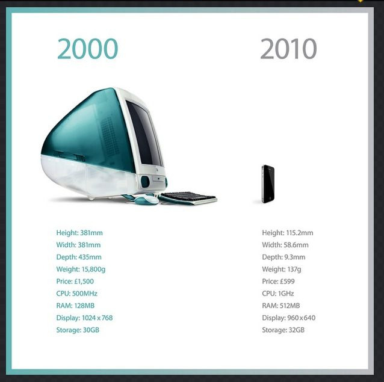

Sat, 25 Sep 2010 20:44:44 · Apple · technology · iPhone
the rate at which apples technology is advancing

The rate at which Apple’s technology is advancing in just a decade apart is almost scary! http://dger.at/2XTq
Sat, 25 Sep 2010 20:44:44 · Apple · technology · iPhone

The rate at which Apple’s technology is advancing in just a decade apart is almost scary! http://dger.at/2XTq